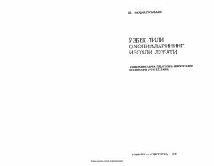

OTO'zbek tilidagi omonim so'zlar va ularning izohlarini qamrab olgan ilmiy-uslubiy lug'at.
Mazkur lug'at hozirgi o'zbek tilidagi omonimlar va ularning ma'nolarini izohlashga bag'ishlangan. Kitobda so'zlarning tarixi-etimologik ildizlari, ruscha ekvivalentlari va matnda qo'llanilishiga doir misollar keltirilgan. Qo'llanma oliy o'quv yurtlari talabalari, o'qituvchilar va tilshunoslar uchun mo'ljallangan.